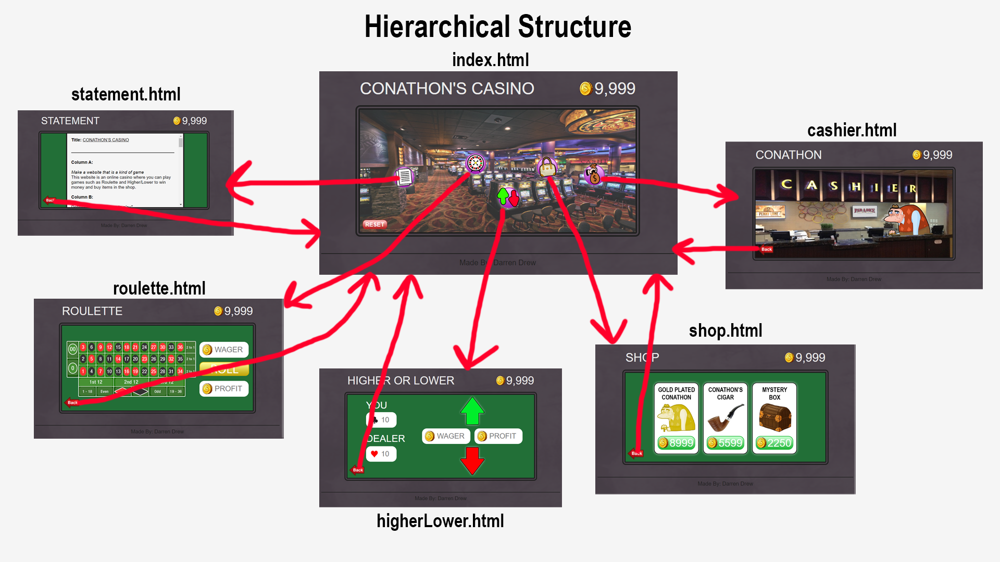

Title:
CONATHON’S CASINO
Column A:
Make a website that is a kind of game
This website is an online casino where you can play games such as Roulette and Higher/Lower to win money and
buy items in the shop.
Column B:
Definition 9:
"One’s turn to play"
The player can play Higher/Lower by making bets against the casino. Either the player wins, or the casino
wins
Definition 10:
"A playing for stakes; gambling"
In Roulette and Higher/Lower the player can place bets and gamble their money to potentially double or
triple it
Reference link for definitions
Column C:
Definition:
Procedurality
Bogost conveys the importance of the player's experience and how games communicate emotions
through their structure/procedure. In my casino game, I want to determine the user’s emotions by creating an
illusion of control. The allure of winning will make the user want to keep playing. There will be
visual/audio queues from winning/losing. There will be a reward system in terms of the shop to buy items
with your winnings.
Column D:
My choice for the project is the
JavaScript-Oriented Option. Below is a list of my chosen JS
Categories.
1 & 3: Randomness with randInt integrated into non-link JS in a novel way & Random text or images
Randomness is used for almost every aspect of this project. Examples include: Random speech prompts from
Conathon; Random Images of Suits for Higher/Lower; Random number for Roulette; etc.
6: Div Interactions
Div interactions are used to modify the styles, text, and images of divs throughout the website.
11: using JS setTimeout (or its more complex sibling) to trigger events
Set timeout is used to twice. ONCE to alternate Conathon opening and closing his mouth when he is talking.
How long he talks is dependent on how large the speech bubble is. And TWICE to show the result of roulette
by flashing white or green/yellow to indicate win/losing.
There are other aspects of JS that were used such as mouse rollovers to indicate if a button is clickable /
on cooldown; and local storage to save values across HTML pages.
JS Categories:
Every webpage includes at least some use JavaScript
except the statement.
Category 1/3/6:
higherLower.html
roulette.html
cashier.html
Category 11:
roulette.html
cashier.html
Articulation:
My project for A2 is Conathon's Casino. For this project, I wanted to create an interactive casino world
where you can click around a map (inspired by Club Penguin) and play different casino games, interact with
others (Conathon), and buy items from the shop.
The map is the first page the player is put into. From there are able to
explore by clicking around
the 4 different places at Conathon's Casino. They can either visit “Roulette”, “Higher/Lower”, “The Shop”,
or “The Cashier”. I like the idea of no labels on the mini-map other than the icons, and the mini-map as a
hierarchy to allow the user to feel like they are truly exploring a connected world.
Roulette is a game where the player can place a wager of their money, and bet on what square the roulette
table is going to land on. The player can either lose their wager, or they can win 2x, 3x, or up to 36x
their wager if they guess correctly. However, the game is rigged with a slight advantage to the casino. This
is because you win based on the odds of (1/36) but there are actually 38 squares when you include 0 and 00.
Higher/Lower is a game where the player can bet if their card is going to be higher/lower than the dealers.
The player can either lose or double their money. However, this game is also rigged. Even though it seems
50/50, the reason it favours the casino is because if both cards are the same the casino wins.
The shop is Conathon's incentive for the player to keep gambling. The default balance of money when first
starting is 9999, which is not enough to buy everything in the shop. The shop encourages gambling to win
money to buy all the items. The shop also connects the environment of the casino by including GOLD PLATED
CONATHON for $8999 which adds to the idea of the Casino being one big world. It is Conatho's Casino after
all.
The cashier is where you can interact with Conathon. By clicking on him he gives you random advice of 14
different prompts. There is a 1/7 chance that you collect a random sum money from Conathon. This easter egg
of Conathon giving you money as you speak to him encourages the player to stay in the world and gamble more.
Conathon is my favourite character in my project. He is what adds the human element the LIFE to his casino.
He makes you feel like you're not alone. Conathon's name also adds to the overall theme of my website that I
was going for. A scummy casino that scams you where the owner is a conman and will pinch you of every penny.
As scummy as it may be, it still has a local, independently own, thrown together charm to it that you will
come to love.
If you ever lose all your money. You can always click the RESET button in the bottom right of the map. But
be careful, because that means everything you bought in the shop will be taken away via Conathon's
Bankruptcy Agreement.
Sitemap Diagram:

Credit:
Most learning of JavaScript was supported by
w3schools.com aswell as other random resources,
and
my knowledge of HTML/CSS/JS since I am already somewhat expierenced as a Computer Science Major having done
some projects.
All images I used (that I did not create) were used from:
freepix.com
This includes:
- The background of the map
- The background of the cashier
- The coin icon
- The shop icon,
the
cashier icon
- The picture of Conathon
- The mystery box in shop
- The cigar in the shop
- The roulette sheet